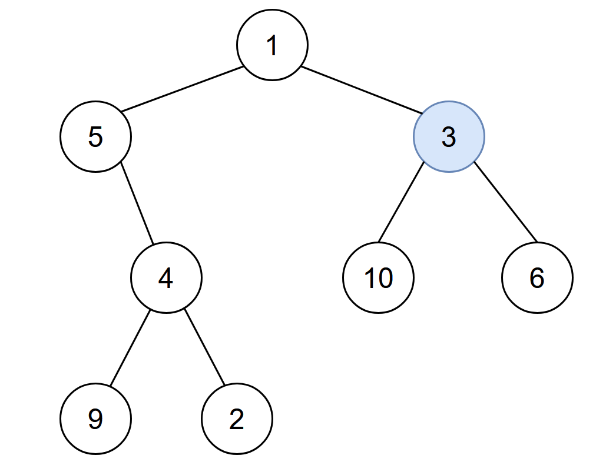
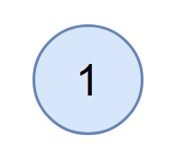

| Category | Difficulty | Likes | Dislikes |
|---|---|---|---|
| Algorithms | Medium | 3162 | 68 |
hash-table | tree | depth-first-search | breadth-first-search | binary-tree
amazon | adobe | bloomberg | uber | microsoft | apple | flipkart | servicenow | sharechat
You are given the root of a binary tree with unique values, and an integer start. At minute 0, an infection starts from the node with value start.
Each minute, a node becomes infected if:
Return the number of minutes needed for the entire tree to be infected.
Example 1:

Input: root = [1,5,3,null,4,10,6,9,2], start = 3
Output: 4
Explanation: The following nodes are infected during:
- Minute 0: Node 3
- Minute 1: Nodes 1, 10 and 6
- Minute 2: Node 5
- Minute 3: Node 4
- Minute 4: Nodes 9 and 2
It takes 4 minutes for the whole tree to be infected so we return 4.Example 2:

Input: root = [1], start = 1
Output: 0
Explanation: At minute 0, the only node in the tree is infected so we return 0.
Constraints:
[1, 105].1 <= Node.val <= 105start exists in the tree.